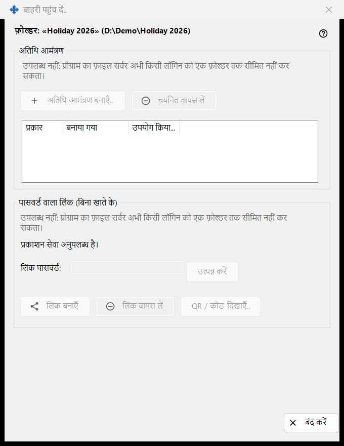
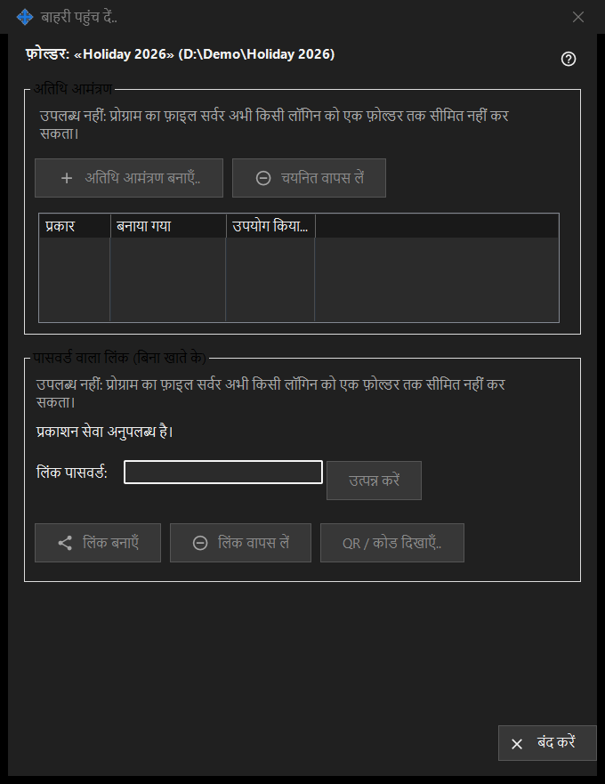

बाहरी पहुंच दें
यह किस लिए है
एक साझा फ़ोल्डर तक उन लोगों की पहुँच नियंत्रित करती है जो आपके अपने डिवाइसों से बाहर हैं: अतिथि आमंत्रण या पासवर्ड वाला लिंक जिसके लिए खाते की ज़रूरत नहीं। यह चुने हुए फ़ोल्डर के लिए Share Manager की मुख्य विंडो के बाहरी पहुंच दें.. बटन से खुलती है। इस संस्करण में नई पहुँच बनाने वाले नियंत्रण बंद हैं और विंडो कारण दिखाती है, जबकि पहले से मौजूद पहुँच वापस ली जा सकती है।


इस क्रम में
- फ़ोल्डर के नाम और पथ वाली शीर्ष पंक्ति पढ़ें।
- हर समूह में कारण वाली पंक्ति पढ़ें; जब तक वह दिख रही है, कुछ नया नहीं बनाया जा सकता।
- पहुँच हटाने के लिए कोई आमंत्रण चुनें और चयनित वापस लें दबाएँ, या लिंक वापस लें दबाएँ।
- बाहर निकलने के लिए बंद करें (Escape) दबाएँ।
तत्व
फ़ोल्डर और स्थिति
बोल्ड पंक्ति फ़ोल्डर और उसका पथ बताती है। नीचे की स्थिति पंक्ति आख़िरी नतीजा बताती है। जब प्रकाशन सेवा चल नहीं रही होती, तो विंडो कहती है: प्रकाशन सेवा अनुपलब्ध है। और उसके बटन बंद रहते हैं।
अतिथि आमंत्रण
समूह में अतिथि आमंत्रण बनाएँ.., चयनित वापस लें और इस फ़ोल्डर के अतिथि आमंत्रणों के लिए प्रकार, बनाया गया और उपयोग किया गया वाली एक सूची है। वापस लेने से आमंत्रण हट जाता है; फ़ोल्डर या उसकी फ़ाइलें नहीं हटतीं।
पासवर्ड वाला लिंक (बिना खाते के)
स्थिति पंक्ति में लिंक नहीं बनाया गया। या लिंक सक्रिय है। में से एक लिखा होता है। लिंक पासवर्ड: बॉक्स छिपा हुआ (मास्क किया हुआ) है और उत्पन्न करें उसे भरता है। लिंक सक्रिय रहने पर लिंक बनाएँ बदलकर लिंक अपडेट करें हो जाता है। लिंक वापस लें पहले पूछता है, क्योंकि लिंक पर चल रहा हर सक्रिय सत्र समाप्त हो जाता है। QR / कोड दिखाएँ.. लिंक को कोड के रूप में दिखाता है।
बनाना बंद क्यों है
हर समूह में कारण की एक पंक्ति दिखती है कि प्रोग्राम का फ़ाइल सर्वर किसी लॉगिन को एक फ़ोल्डर तक सीमित नहीं कर सकता। जब तक वह दिख रही है, आमंत्रण या लिंक बनाने वाले सभी नियंत्रण अक्षम रहते हैं। मौजूदा पहुँच वापस लेना केवल इस पर निर्भर है कि क्या मौजूद है।
प्रबंधक सेटिंग · SFTP साझाकरण सेटिंग · एक्सचेंज सर्वर सेटिंग